The Carbon Island
An experimental island economy where carbon footprint replaces money as the medium of exchange.
Program
Speculative Resort
Location
Davids Island, New York
Year
2021
Team
With Claire Chen
Studio
Columbia GSAPP
Lindsey Wikstrom, Critic
Publication
The Carbon Island reimagines economic value through the lens of carbon footprint. Sited on Davids Island—a quiet former military post in Long Island Sound, used here as a testbed outside the mainstream—the project proposes a closed system in which visitors arrive without their accustomed wealth and leave with a transformed relationship to consumption, labor, and ecology. The premise is unforgiving: every action on the island is priced in carbon, and the only currency anyone holds is the carbon they have personally offset through their own labor.
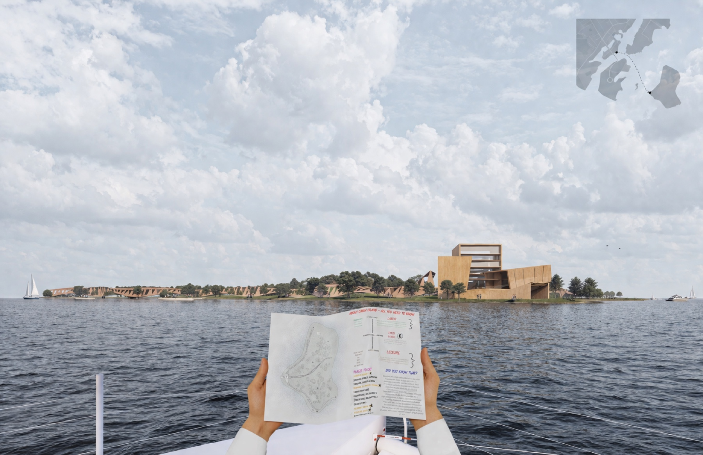
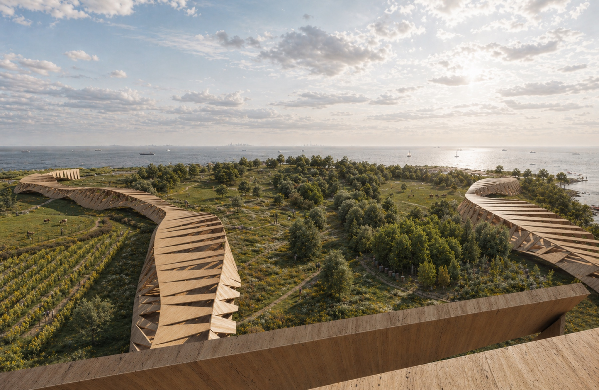
The island divides itself into two interlocking programs: labor and leisure. Labor takes the form of agroforestry—a balance between cultivation and forest stewardship—through which participants earn carbon coins. Mornings are spent tapping maples, tending mushroom beds, and maintaining trail and canopy; afternoons and evenings are spent spending. Coins buy upgrades to the baseline: better meals, larger rooms, a private bath, an hour at the spa, an evening at the pool.
No matter the wealth one arrives with—billionaire or backpacker—status on the island depends entirely on carbon offset, and the social hierarchy resets every morning. Wealth, here, is not a thing you brought; it is something you produce, daily, with your hands.
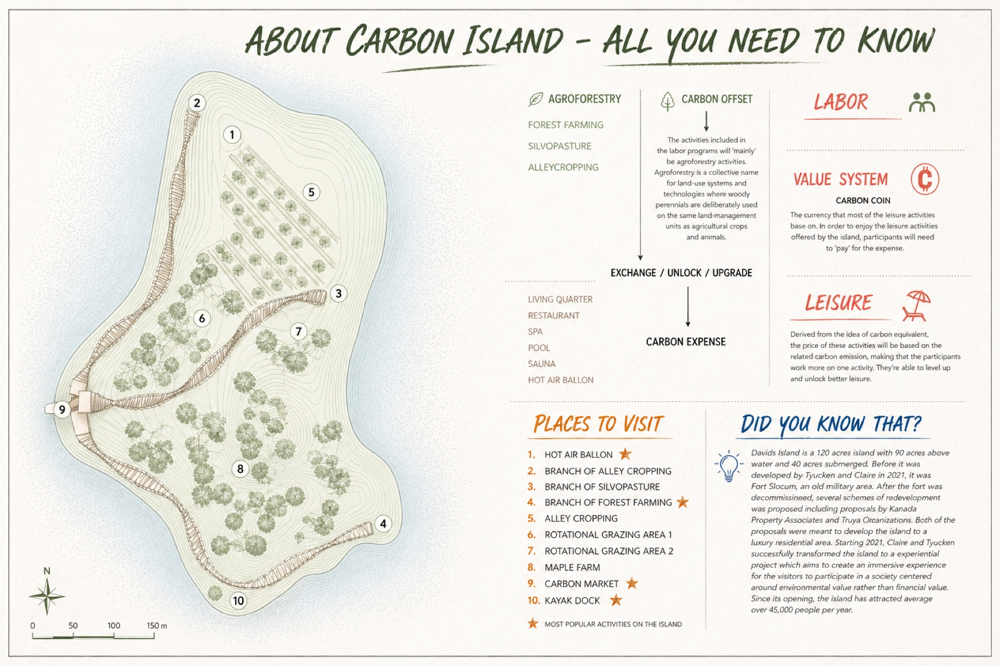
At the center of the island sits the Carbon Market—reception, exchange, gathering hall, and public ledger collapsed into a single timber-framed building. Plans and section perspectives reveal an open, agora-like volume gathered around a central courtyard, where the day's harvests are weighed, prices are posted on a long announcement board, and visitors line up to convert effort into entitlement.
The market is also where the island enforces its rule: prices are not set by demand but by embodied carbon. A bowl of mushroom soup costs what its growing, harvesting, and serving cost the atmosphere; a hot bath costs what its water and heat cost the atmosphere. The ledger is public, continuous, and inescapable.
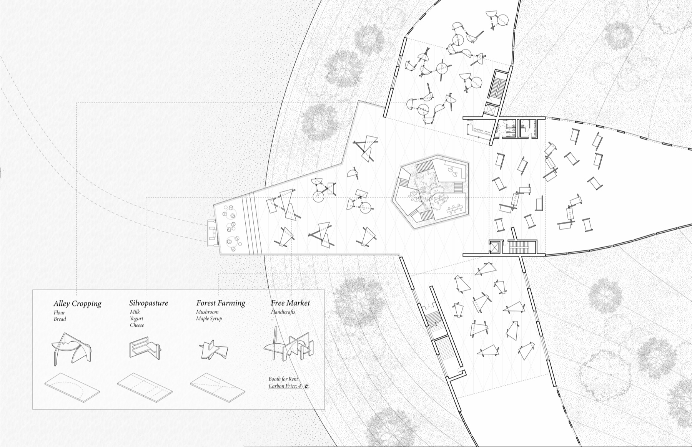
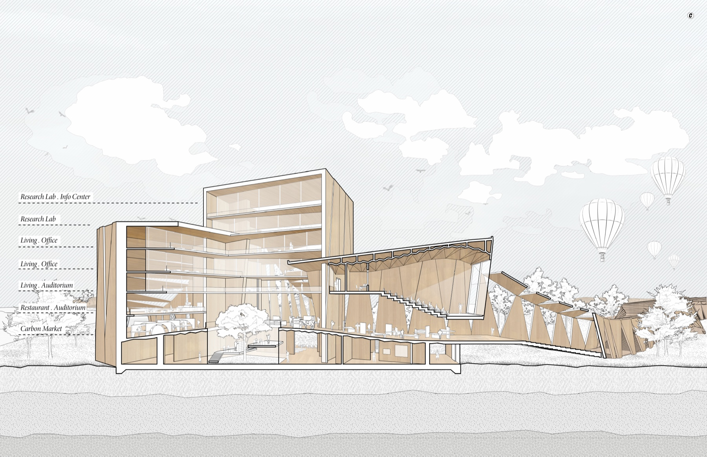
Every building on the island is itself part of the carbon ledger. The market hall, the spa, the courtyards, and the living quarters are framed in cross-laminated timber—much of it harvested from the surrounding managed forest and assembled on site by visiting labor. CLT is chosen for its lightness, its prefabrication economy, and its quiet performance as a structural material, but above all for what it represents on the island's terms: each panel is a measurable bank of sequestered atmosphere, a building element whose carbon cost is negative rather than positive.
The same accounting that prices a meal in atmospheric cost prices the buildings themselves. Walls, floors, and roof beams become the physical receipts of what the island has stored against what it spends. The architecture, in other words, is not background to the economy; it is the economy at scale.
On day one the building is quiet. Visitors arrive at the reception desk and register with a starting balance of zero, then step into the central courtyard, where a single tree—lit from above through a skylight cut into the timber roof—is the first thing the island shows them. Wealth, here, is not what you brought; it is what the next two weeks will earn you.
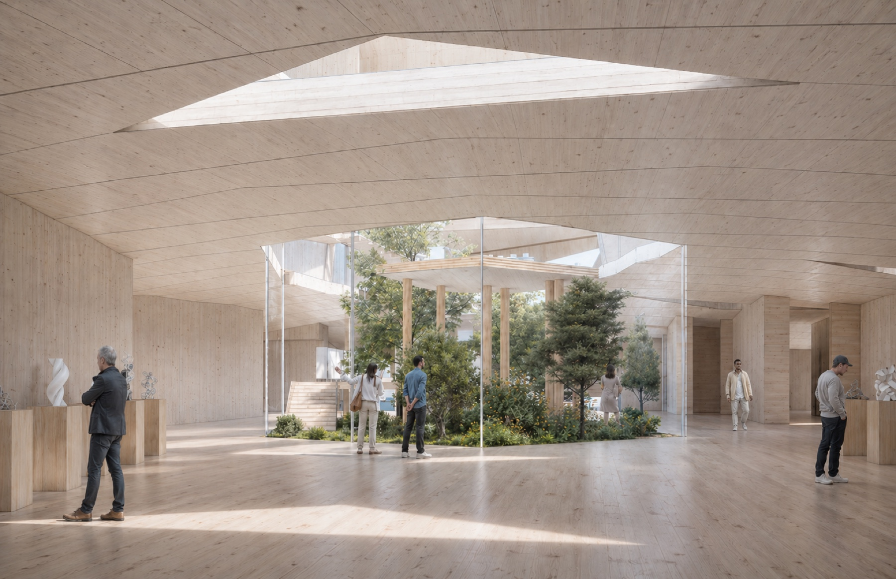
By midmorning the same building changes character. Weighing stations open, exchange counters fill, harvest stalls line the courtyard. Visitors return through the hall every day—at sunrise to queue for tools, at dusk to tally and trade their coins. The market is the rhythm of the island, and the daily ledger is published on its longest wall.
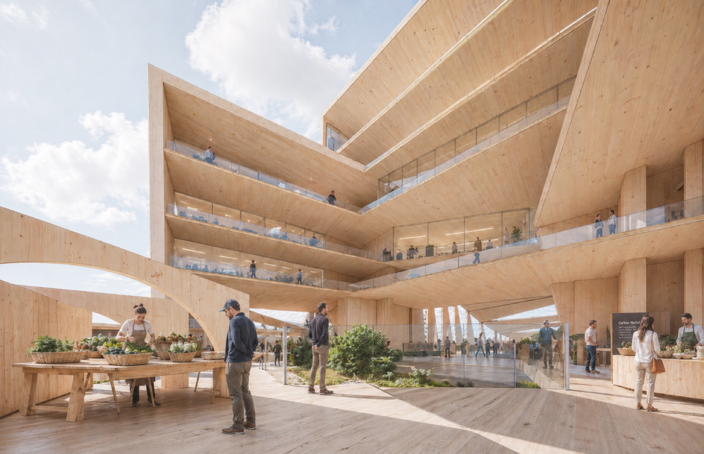
Living quarters cluster around shared courtyards in radial bands stepping back from the central market. Each baseline unit is modest but tactile—a CLT shell, a single window framing the forest, a bed, a desk, and shared bathing facilities down the hall. Earned coins unlock upgrades: a private bath, a south-facing terrace, a cabin closer to the spa.
Radial planning brings every household within a ten-minute walk of both the farms and the market, so the daily commute is part of the experience rather than something wasted. The forest is never more than the next door away.
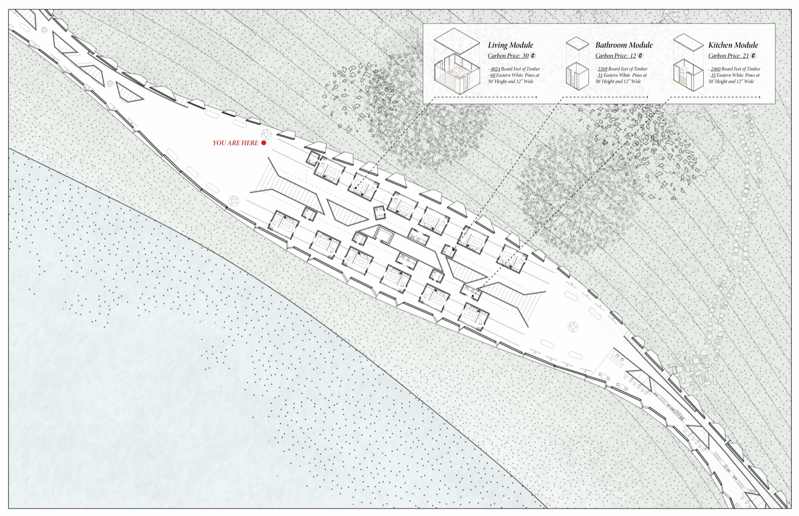
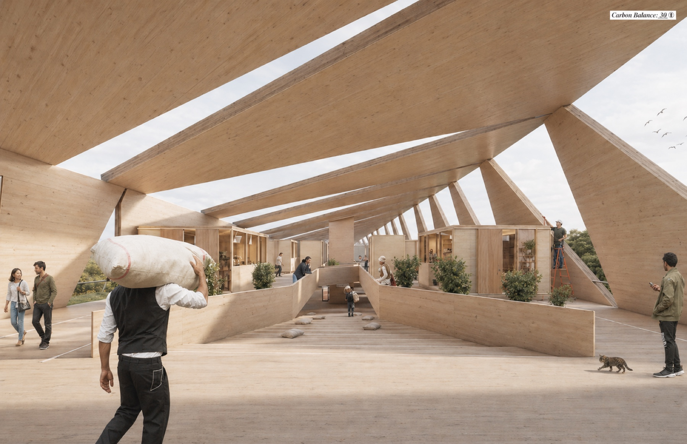
The agroforestry program is split between maple syrup tapping in the open canopy and mushroom cultivation in the dim understory, with forest maintenance—pruning, thinning, replanting, trail clearance—pulling everything together. Some of the felled timber feeds the CLT shop on the far side of the island, where panels are pressed and stacked for the next phase of construction; the rest is left to decompose and feed the soil.
Each task is precisely metered: a kilogram of syrup, a tray of mushrooms, an hour of trail work, a single felled and stacked log. Productivity and consumption are published in real time on the market's announcement board, so the island's carbon balance is never a mystery. It is a public number that swings up and down with the day's work and the day's spending—a collective ledger no one is allowed to forget.
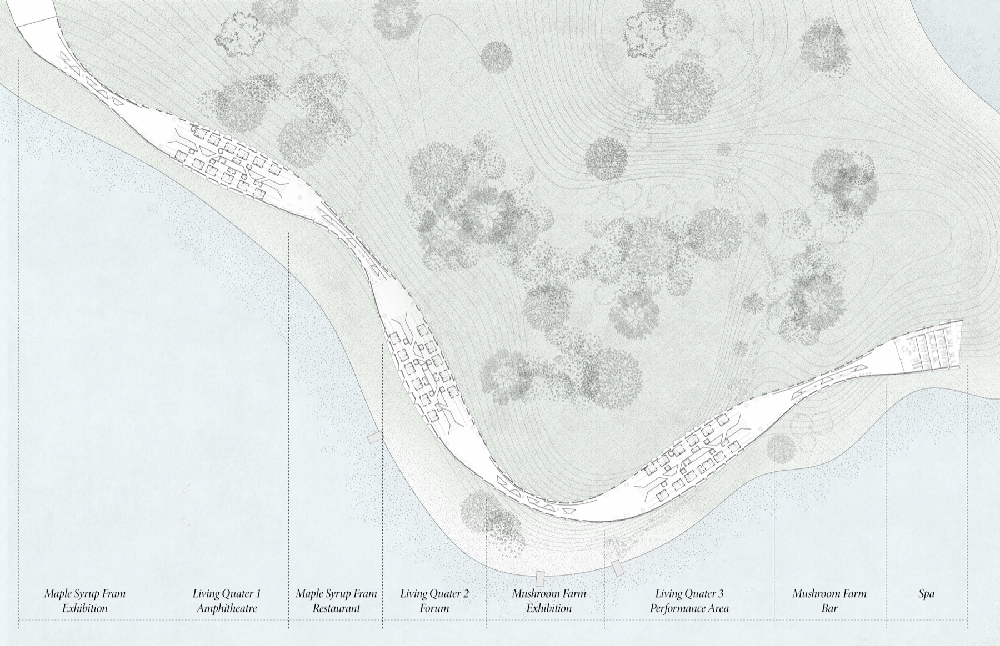
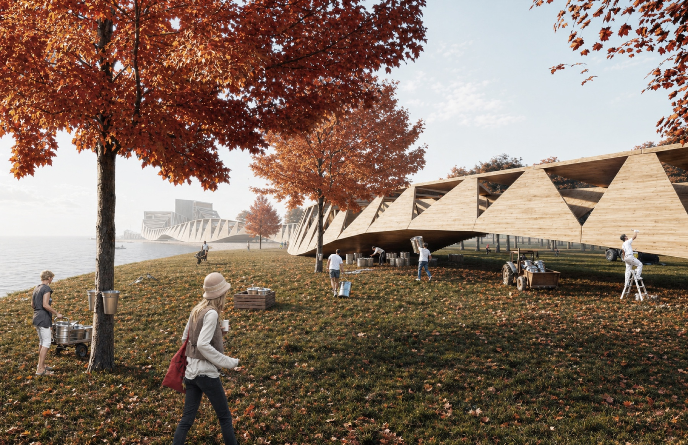
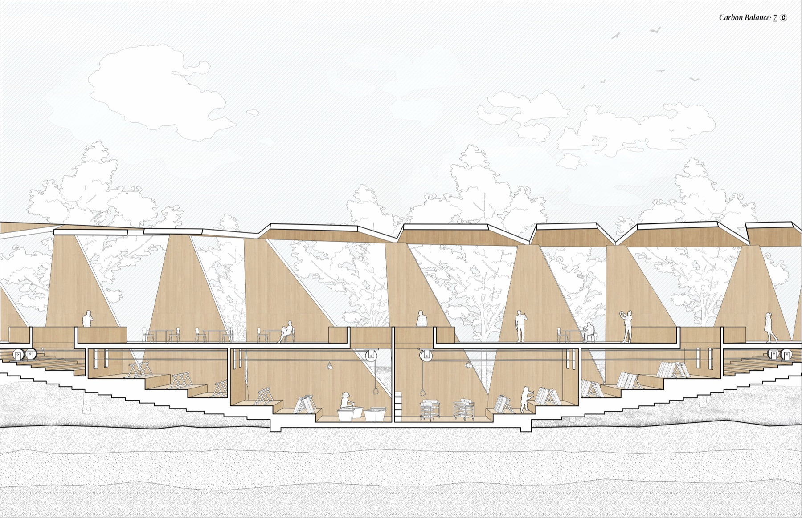
By making carbon the medium of exchange, the project transforms what is usually invisible into something tangible, social, and consequential. A meal becomes a measurement. A swim becomes a transaction with the atmosphere. The architecture, the labor, the food, even the pool of warm water at the end of a long day—all of it is denominated in the same unit, all of it visible on the same ledger.
The stay is short by design, two weeks at most, but the habits it cultivates are meant to outlast it. Visitors leave with their bodies tuned to a different accounting—one they will carry back into a world that still prices almost everything in dollars and almost nothing in carbon.
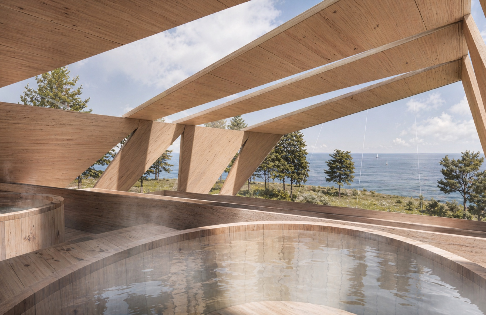